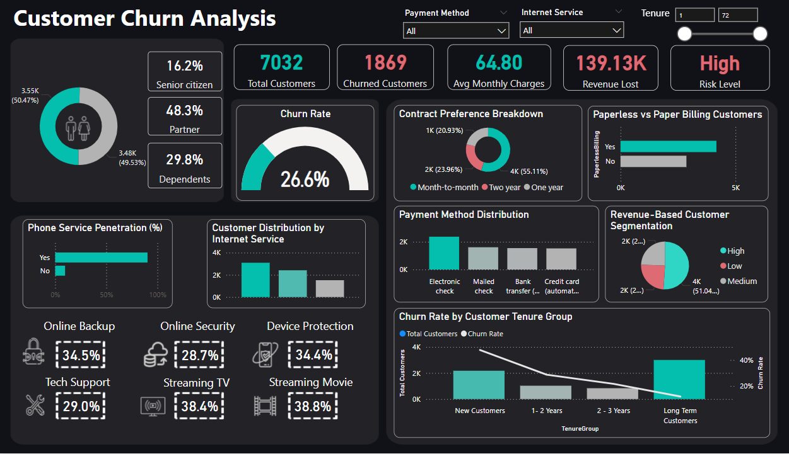

Customer Churn Analysis Dashboard
Power Query | Power BI

In this analysis, I explored a telecom dataset to uncover patterns behind customer churn. Using Power BI, I created a dynamic dashboard to answer key business questions like what drives churn, which segments are most at risk, and how revenue is impacted. The goal was to provide actionable insights to improve customer retention strategies.
Here are the questions I was interested in answering:
1) What is the overall churn rate?
2) What is the billing preference among customers?
3) Does revenue influence the churn rate?
4) How do demographics affect customer churn?
5) How is the payment made?
6) What services are enabled by customers?
7) Which tenure groups are more likely to churn?
I took the following steps to create my analysis:
1) Data Collection & Import: Imported the Customer Churn dataset into Power BI and explored its structure.
2) Data Cleaning using Power Query: Removed null and duplicate values, corrected data types, and created calculated columns like TotalServices and grouped Tenure.
.png)
4) Visual Exploration & KPI Setup: Built DAX measures for churn rate, total customers, churned customers, revenue loss, and more. Applied dynamic KPI formatting.
5) Dashboard Design: Used bar charts, pie charts, and heatmaps. Added slicers for gender, tenure, services, and payment type. Organized dashboard into sections for clear insights.
6) Insight Generation: Answered key business questions around churn trends, revenue impact, and at-risk customer groups.
Here are my key takeaways:
- Identified a 47.7% churn rate, highest among customers with ≤12 months tenure—highlighting early-stage retention concerns.
- 90% of users opt for Phone Service, suggesting it’s a standard inclusion rather than a churn driver.
- Half of customers are partners—offering a segment for couple- or family-oriented retention efforts.
- Month-to-Month contracts and Paperless Billing account for 42% of churn, pointing to low-commitment users needing targeted engagement.
- 2-Year contract users show only 2.8% churn and are generally low-risk, loyal customers.
- Electronic Check payers are most likely to churn (45.3%), especially on Month-to-Month plans.
- Credit Card and Mailed Check users are long-term, low-risk segments worth nurturing.